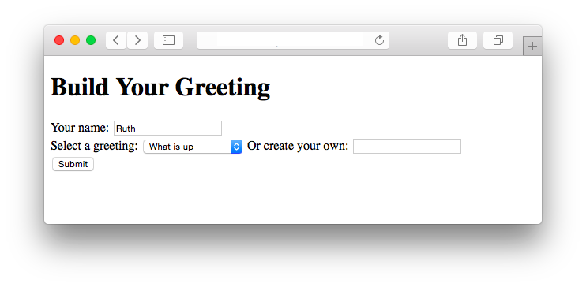
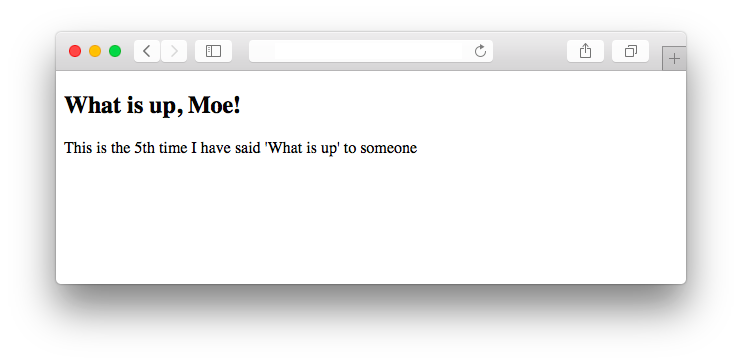
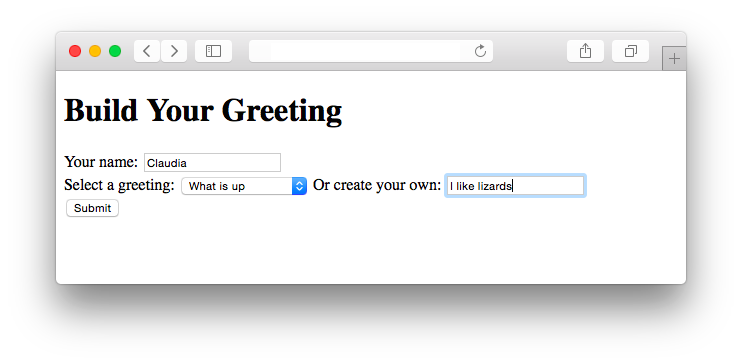
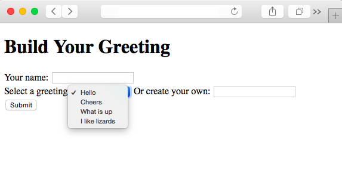

Module 7
Studio: Greetings
Today you will use your new SQL skills to build a full website with a PHP back end and a database that persists user data!
Your site will also follow good MVC conventions.
This is a big, hearty studio, with lots of work to do. Oh boy!
The Goal
First, let's go over what you are trying to accomplish.
The home page is simply a form where users can input their name and choose a greeting (If you did the Class 1 Prep, this should feel very familiar!):
Upon submitting the form, the user should be warmly greeted:
Notice that the site also reports how many times a particular greeting has been used. If someone else (named, say, Moe) were to come along and select "What is up" at this point, he should see this:
How does the site keep track of this? By using a database, of course! You will build a database table to store greetings, where each greeting will have a text field with a value like "What is up" and a num_times field with a value like 5. More on that later.
Another feature to notice is that the form on the homepage should also give users the option of creating their own "custom" greeting, rather than choosing from one of the "pre-made" greetings in the drop-down menu:
Claudia should see a response like this:
(As you can see, your site doesn't have to be smart about English numbering syntax. You can say "1th" and "2th" instead of "1st" and "2nd").
One last thing to note is that when a user creates a custom greeting like "I like lizards", that new greeting should then be permanently added to the database, and subsequently should be available as an option in the dropdown menu:
Starter Code
We have provided you with some starter code. Download it using the wget command:
$ cd ~/workspace/module7/studios/
$ wget http://education.launchcode.org/cs50x-stlouis/calendar/cs50/unit3-web/module7/materials/studios/greetings/greetings.zipUnzip the .zip archive, confirm that you now have a greetings directory, and then delete the archive:
$ unzip greetings.zip
$ ls
greetings/ greetings.zip mult_table/
$ rm -f greetings.zipA Brief Tour
Let's see what the project looks like so far.
$ cd greetings
$ ls
config.json includes/ public/ vendor/ views/A lot of stuff in there! If we expand it, it looks like this:
├── config.json
├── public
├── greet.php
└── index.php
├── views
├── greeting_form.php
├── greeting_display.php
└── header.php
├── footer.php
├── includes
└── helpers.php
└── vendor
└── library50-php-5
└── CS50
├── CS50.php
└── (a bunch of other things we don't need to care about)
├── ... The public/ Folder
The public/ directory contains our Controllers, the pages that our site makes publicly available for users to visit. You should be pretty familiar by now with the following 2-page form/reponse dynamic:
index.php, our "home page", displays a form where the user can submit her name and choose a greetinggreet.phpis the file that receives and handles the submission of the form.
The views/ Folder
If you glance through the source code for the two public pages, index.php and greet.php, you might notice that neither contains any HTML. That's because, as per MVC, we want those Controller files to handle our core "business logic" only-- we do not want the Controllers to worry about the details of how stuff looks on screen. Any code specifying how stuff looks should be factored out into separate "template" View files, which our Controllers will simply combine together to assemble the overall response that ultimately gets sent back to the client.
For example, notice that at the bottom of each of those Controller files is a section where we "render stuff", by passing the names of various template files to the the render() function from helpers.php (more on that soon). There are 4 such template files in the views/ folder:
header.phpis some basic boilerplate HTML that goes at the top of a pagefooter.phpis similar basic HTML for the bottom of a pagegreeting_form.phpis the form that users fill out when they visit the home pagegreeting_display.phpis the greeting that users see after submitting the form
Both Controllers follow a similar pattern of rendering the header.php and footer.php Views first and last respectively, with a more interesting piece of content sandwiched in between.
The includes/ Folder
Over in the includes/ folder is just one file, helpers.php, which contains a few helper functions:
render(), as mentioned before, receives the name of a "template" file, and optionally some extra data that the template file will need. This function should check to see if the template file actually exists, and if so, render it by simply callingrequire()on it.create_new_greeting()receives a string representing a new custom greeting fom the user (e.g. "I like lizards"). It should add a new row to the database for that string, but only after checking to make sure the database does not already contain a greeting with identical text.
The vendor/ folder
The vendor folder is where we have placed all 3rd-party code that other people wrote that we would like to use in our project.
There is really only one 3rd-party library that we are using directly, and that is a small library written by the CS50 folks in a file called CS50.php. This CS50 library shields us from many of the low-level details involved in connecting to and interacting with a database, which will free us to focus on our SQL queries instead of the grunt work required to set up a connection, authenticate ourselves, and so on.
Incidentally, there are a bunch more libraries in this folder, because the CS50 library itself is dependent on them. But we don't have to care about that for the purposes of this project.
Setting Up the Database
The first thing to do is to set up the database. Follow along as we walk you though how to do that.
MySQL Server
First, start up your apache server:
$ apache50 start public/
Setting Apache's document root to /home/ubuntu/workspace/module7/studios/greetings/public ...
* Starting web server apache2
*
Apache started successfully!
Your site is now available at https://ide50-jharvard.c9users.ioNext, start up another separate server for the database:
$ mysql50 start
* Starting MySQL database server mysqld
...done.
* Checking for tables which need an upgrade, are corrupt or were
not closed cleanly.This server establishes a communication channel between our back end and our database, so that we can read from and write to the database.
But we don't yet have a database! Let's create one.
Create the Database in phpMyAdmin
If you head over https://ide50-jharvard.cs50.io (with your username instead of "jharvard"), you will see a big orange error on the screen. No problem, this is just because you don't have a database yet. Go to the address bar and add /phpmyadmin onto the end of your url, yielding https://ide50-jharvard.cs50.io/phpmyadmin, and hit Enter.
You should now arrive at a login screen for something called phpMyAdmin. phpMyAdmin is a tool that allows you to manage your MySQL databases. Let's log in. You can find your username and password by running some magic commands in the terminal:
$ username50
jharvard
$ password50
123456789Once you log in, click on the SQL tab in the menu at the top (towards the left). This tool allows you to write SQL code to create and edit databases.
Paste the following code into the textbox:
--
-- Database: `module7studio`
--
CREATE DATABASE IF NOT EXISTS module7studio;
USE module7studio;
-- --------------------------------------------------------
--
-- Create a table `greetings`
--
CREATE TABLE IF NOT EXISTS `greetings` (
id int(10) unsigned NOT NULL AUTO_INCREMENT,
text varchar(255) NOT NULL,
num_times int(10) unsigned NOT NULL,
PRIMARY KEY (id),
UNIQUE KEY text (text)
) ENGINE=InnoDB;
--
-- Add some data to table `greetings`
--
INSERT INTO greetings (text) VALUES('Hello');
INSERT INTO greetings (text) VALUES('Cheers');
INSERT INTO greetings (text) VALUES('What is up');Essentially, we are creating a new database called module7studio, within which we are creating a new table called greetings, and finally we are adding a few rows to the greetings table.
Look over the code for a sec, make sure it makes sense, and then execute the code by clicking Go at the bottom right.
You should now be able to click on a table called greetings, which you can browse and see that it contains some data, the three rows we inserted!
Add Authenticaion to config.json
There is one file we didn't talk about previously, config.json. Open it up now, and you'll see it is a very small chunk of JSON, with some TODOs. This is simply a place where we put our MySQL credentials, which the CS50 library will use in order to establish its connection to the MySQL server.
Go ahead and add your username and password to this file, and save it.
Check It Out
Now we are finally at the point where you can visit the site!
Go back to the root page, https://ide50-jharvard.cs50.io. You should now see a log statement detailing the contents of the database. Indeed, we are looking at the output of index.php. (Recall that even though we aren't directly visiting /index.php in the URL, the apache server, upon finding a file with the special name "index", automatically takes the user there.)
The var_dump() function
Look at the source code for index.php, and you will see that the output on the page is coming from two lines near the top of the file:
print("This is what we have in the database right now:");
var_dump($greeting_rows);The second line uses an awesome php function valled var_dump() to render to the screen a nicely formatted, human-readable string describing the contents of our local $greeting_rows variable. Whenever you're trying to debug, make liberal use of the var_dump() function.
The query() function
Looking up, we can see that the $greeting_rows variable came from this line:
$greeting_rows = CS50::query("SELECT * FROM greetings");This is where the magic happens. The CS50 library exposes a function called query() which allows you to make SQL queries on your database. You simply pass in a string with the SQL code, and the function will execute the query and return the results. For more one this function, see the lecture notes from Week 8 / SQL.
(Don't worry too much about the CS50:: syntax. The query() function is "inside of" an "object" or "class" called CS50, and so any time you want to use the function, you have to prepend CS50::.)
Get to Work
After index.php gets the current data from the database and dumps it to the screen, the next few lines call the render() function. But on screen, nothing seems to be showing up!
That's because render() is incomplete. That is your first task! Fill in the TODOs so that render() actually causes templates to show up on screen. You might find David Malan's mvc-3 program provides a helpful example from which you can more-or-less copy. (See the source code and the walkthrough video for guidance).
Other TODOs
Once you get render() up and running, you should see a <form> on the screen! At that point, your next few TODOs will become apparent. Keep on working your way through all the TODOs (everything that needs to be done is documented in the source files) until your site contains all the features described above.
Note: There is one TODO that asks you to insert a new entry into the database (this occurs when a user typed their own custom greeting into the form). In the TODO message, we ask you to insert the new greeting, BUT ONLY if the same greeting does not already exist in the database (e.g., if the user typed "Hello", then don't insert anything because we already have an entry for "Hello"). Just to be clear, our intention is not that you accomplish this task in one giant SQL query, but rather that you use multiple steps:
- first, using PHP, get the text of all existing entries from the database
- iterate through the existing greetings to make sure this new custom greeting does not already exist.
- if not, then insert the new greeting into the database. (otherwise, do nothing)
How to Submit
Compress your greetings directory into a .zip file:
cd ~/workspace/module7/studios
zip -r greetings.zip greetingsUpload greetings.zip on Vocareum, in the assignment titled Studio: Greetings.